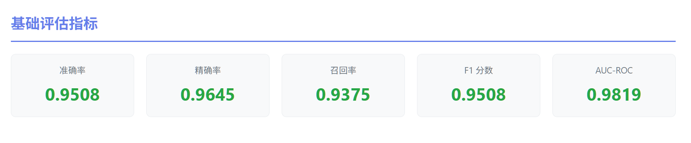
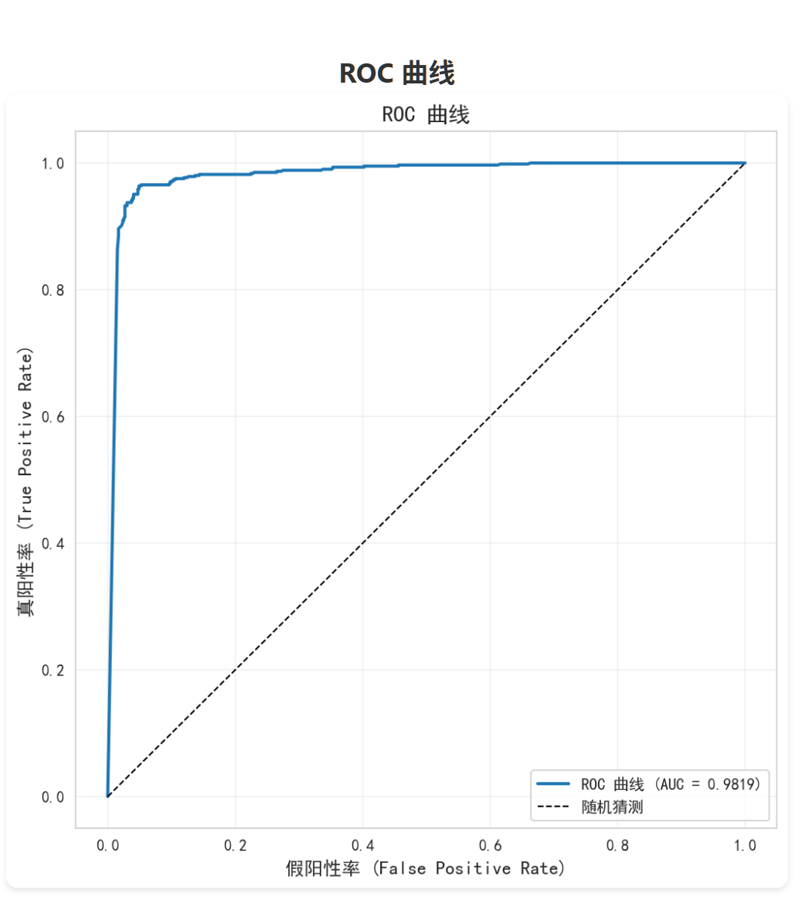
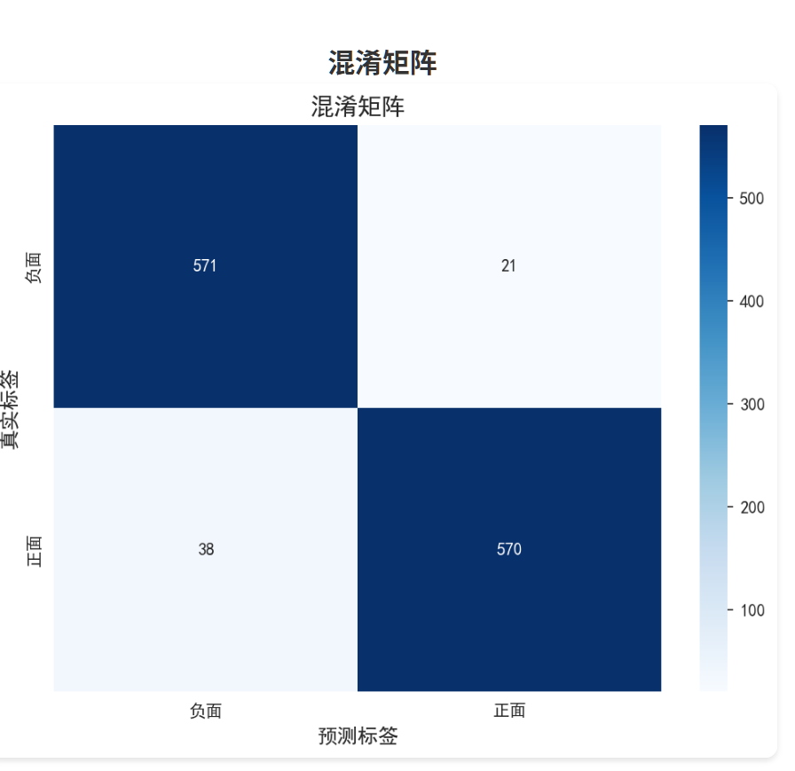
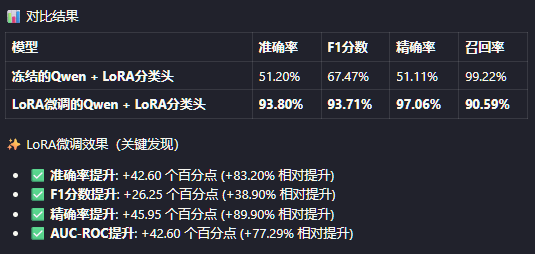

转码day16：完成了qwen lora微调分类项目
问题：Colab 备份失败
Colab 的 notebook 保存备份时输出文件的顺序出错，导致虽然能看到 wandb loss 下降的过程，但输出文件中的 LoRA 矩阵权重为空。
解决方案：迁移到 AutoDL
由于本地环境配置繁琐且性能不足，直接使用 AutoDL 云服务：
- 本地笔记本配置慢、运行吃力
- AutoDL 半小时内完成环境搭建和训练启动
- 等待训练完成后，将结果拉取至本地进行推理和效果评估
环境修复
本地的 torch 环境因昨天安装的版本冲突而损坏，最终采取完全重装方案：
- 卸载所有 Python 和 conda 环境
- 重新安装并配置完整环境
- 成功运行评测任务
评测结果

基础指标
|
|
F1 分数是精确率和召回率的平衡指标：
- 值越接近 1，模型综合表现越好
- 为什么叫"调和平均"：它不像算术平均那样简单平均，而是对极端值更敏感。如果精确率或召回率有一个很低，F1 会明显下降。
AUC-ROC (Area Under the Curve - Receiver Operating Characteristic)
定义：ROC 曲线下方的面积，衡量模型区分正负类的能力。

ROC 曲线：
- X 轴：假阳性率 (FPR) = 假阳性 / (假阳性 + 真阴性)
- Y 轴：真阳性率 (TPR) = 真阳性 / (真阳性 + 假阴性)
- 曲线从 (0, 0) 到 (1, 1)，越靠左上角越好
结果：98.19%
AUC 值的含义：
- AUC = 1：完美分类器
- AUC = 0.5：随机猜测
- AUC < 0.5：比随机还差
ROC 曲线的理解
ROC 曲线不是一个模型画出来的一个点，而是：
同一个模型，在不同决策阈值下的一系列 (FPR, TPR) 组合
假设模型输出一个 score ∈ [0, 1]：
-
阈值很高（如 0.9）：
- 很少预测正面
- → FPR 低，TPR 也低
-
阈值很低（如 0.1）：
- 很多都预测正面
- → TPR 高，但 FPR 也高
把阈值从 1 → 0 扫一遍，就得到了这条曲线。
ECE (Expected Calibration Error - 期望校准误差)
定义：衡量模型预测的置信度与实际准确率之间的校准程度。
结果：0.4880（值越小越好）
含义：如果模型说"我有 90% 的把握是对的"，那么它应该有 90% 的时候确实是对的。ECE 衡量这种"说对"和"做对"之间的差距。
分析：这项指标结果较差，因为置信度接近 0.5，而实际上大部分预测都正确。模型在能力上往往不够自信，结合高置信度错误（16 个）来看，它在某些不该自信的地方反而过度自信。这可能是由于数据量较小、微调不足导致的。
鲁棒性评分 (Robustness Score)
结果：63.0/100
含义：综合衡量模型在各种边界情况下的表现，包括：
- 短评正面/负面
- 反语（如"呵呵，绝了"）
- 否定词堆叠（如"不差"）
- 网络流行语（如"yyds"、“摆烂”）
- 错别字
- 长文本/超长文本
- 表情符号
- 空文本等边缘情况
为什么模型鲁棒性只有 63 分：
模型在常规测试集上准确率达到 95%，但在鲁棒性测试中得分较低，说明：
- 对常见的网络流行语和反语识别不佳
- 对短评负面和表情符号的判断较弱
- 训练数据没有覆盖这些特殊场景
这并不是严重问题，只是训练集未覆盖这些场景，相信继续微调后会有改善。

混淆矩阵的对称性良好，说明模型对正面和负面情况都有较好的识别能力。
对比冻结的Qwen基础模型+训练后的分类头 vs LoRA微调的Qwen+训练后的分类头 结果如下：

召回率冻结qwen反而更高，实际上是没意义的。是一个非常典型的分类器偏向问题。 冻结的模型几乎把所有样本都预测为"正面" 所以才出现了召回率几乎拉满的情况。 总而言之，从F1分数和准确率各个地方来看，LoRA对模型的微调是十分成功的，确实赋予了模型识别好评差评的能力。 这个项目就先做到这了，1.5B的模型能力确实有限，对于极限情况的模棱两可评价确实还有局限，对于网络用语流行词啥的，我相信加入数据集训练一下也是可以改善识别率的，但对我个人而言，已经直观地看见了LoRA的效果，走完了一整个流程，这就够了。